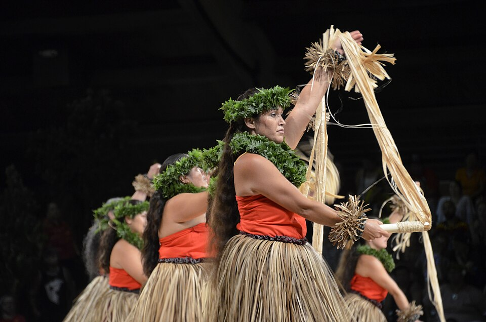

Place: Edith Kanakaʻole Stadium, Hilo, Hawaiʻi Island
Type: Stadium / cultural venue
Story it tells: A public venue named for a kumu hula, composer, teacher, and cultural leader whose work helped carry Hawaiian language, chant, hula, and ancestral knowledge into modern public life.

Edith Kanakaʻole Stadium is a multi-purpose venue in Hilo named for Edith Kenao Kanakaʻole, a revered kumu hula, chanter, composer, teacher, and cultural practitioner. Kanakaʻole was born in Honomū in 1913 and became one of the most influential figures in the modern perpetuation of Hawaiian language, hula, chant, and cultural knowledge. The stadium that bears her name is best known today as the home of the annual Merrie Monarch Festival, one of the most important hula events in Hawaiʻi.
Kanakaʻole founded Hālau O Kekuhi in 1953 and helped carry forward traditions rooted in chant, dance, genealogy, land, and spirituality at a time when Hawaiian culture had often been marginalized or suppressed. Her work as a kumu hula and composer helped bridge ancestral practice with modern audiences, allowing knowledge passed through families and hālau to remain active in public life. She was also recognized as a Nā Hōkū Hanohano Award winner and a Living Treasure of Hawaiʻi.
In the 1970s, Kanakaʻole taught Hawaiian studies and language at Hawaiʻi Community College and later at the University of Hawaiʻi at Hilo, helping bring Hawaiian knowledge into classrooms as well as performance spaces. Her influence extended through students, family, hālau, recordings, scholarship, and community work. In 2023, she became the first Native Hawaiian woman featured on a U.S. quarter, further reflecting the national recognition of her cultural legacy.
The stadium’s location in Hilo gives the name particular power. It is not simply a building named for a respected cultural figure; it is a venue where the living art she championed continues to be practiced, judged, celebrated, and renewed each year through Merrie Monarch. Edith Kanakaʻole Stadium reflects one of the clearest matches between name, person, place, and purpose in modern Hawaiʻi.